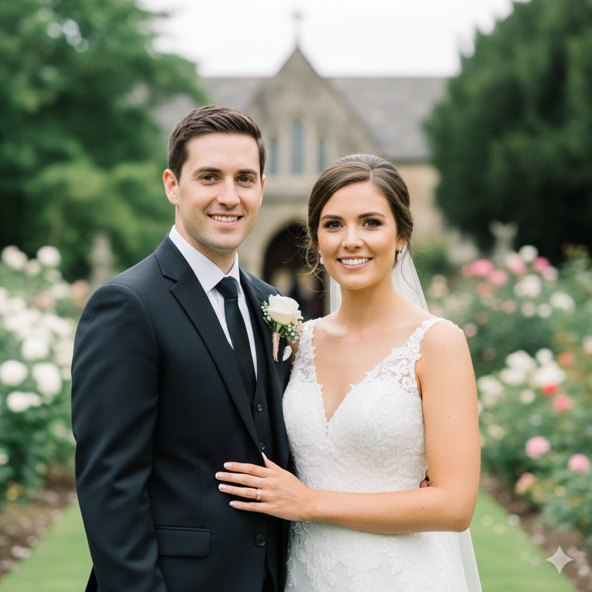
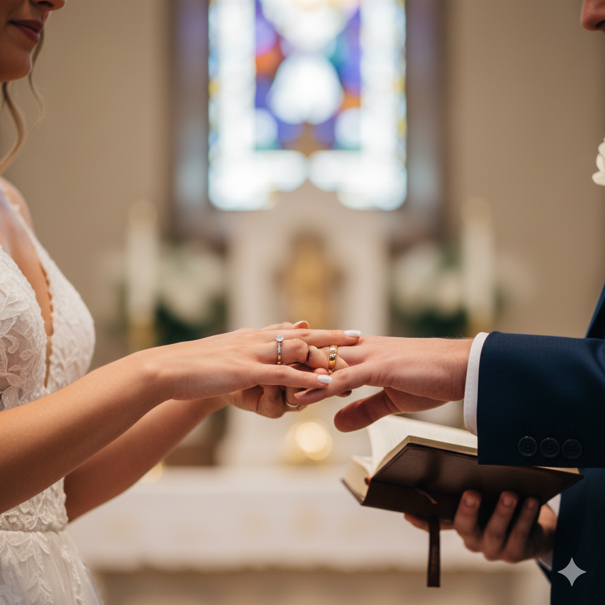
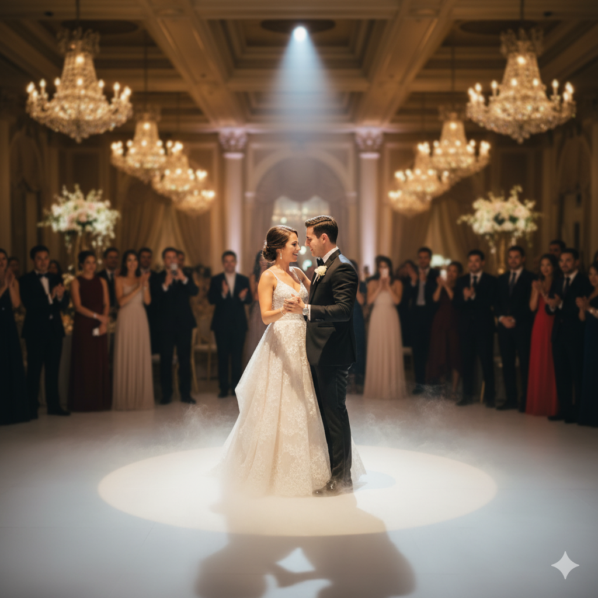

Fotografia
Momento Eterno Fotografia
Piracicaba, SP
Sobre o Estúdio
A Momento Eterno é especializada em fotografia clássica e atemporal para casamentos. O nosso estilo foca-se em retratos elegantes, na cobertura completa de todos os ritos da cerimónia e nos momentos chave da festa. Valorizamos a iluminação perfeita e composições que resultam em imagens tradicionais e sofisticadas.
Com uma equipa de dois fotógrafos, garantimos uma cobertura abrangente do seu evento, capturando diferentes ângulos e perspetivas. O nosso trabalho final é entregue num álbum de luxo, diagramado para contar a história do seu grande dia de forma cronológica e emocionante.
Galeria de Fotos


